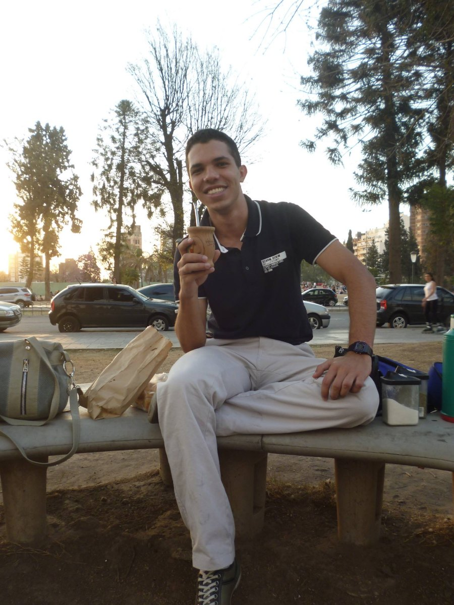

Problema real
Começar pela decisão, pelo contexto e pelas consequências — jamais pela tecnologia disponível.
Fundador e direção clínica · Iniciativa VIA
Médico generalista · FMRP-USP
Transforma conhecimento fragmentado em estruturas verificáveis para educação, decisão e organização do cuidado.

“O ponto não é acumular autoridade. É converter autoridade clínica, científica e institucional em autonomia distribuída.”Dr Lucas HR Almeida
01 Trajetória
A medicina é o centro de gravidade; educação, pesquisa, tecnologia e cidadania são as ferramentas de passagem.
Formado pela Faculdade de Medicina de Ribeirão Preto da Universidade de São Paulo (FMRP-USP), Dr Lucas HR Almeida atua como médico generalista e constrói instrumentos voltados à tradução do conhecimento em decisões mais claras, auditáveis e humanas.
Sua trajetória combina formação militar na Escola Preparatória de Cadetes do Ar (EPCAr), experiência em educação médica, prática assistencial e investigação das interfaces entre inteligência artificial, saúde pública e autonomia do paciente.
02 Método
Nenhuma ferramenta começa pela tecnologia disponível. O percurso é fixo: primeiro o problema, depois a fonte, e só então o instrumento — construído para esclarecer o juízo de quem decide, nunca para substituí-lo.
Começar pela decisão, pelo contexto e pelas consequências — jamais pela tecnologia disponível.
Versionar conhecimento, regras, limites e incertezas antes de transformá-los em produto.
Construir ferramentas que esclarecem o juízo sem capturar dados, usuário ou autoridade.
03 Atuação
Quatro frentes que se sustentam mutuamente — a generalidade aqui não é dispersão, mas a condição para enxergar o cuidado como sistema.
Raciocínio, simulação e comunicação de evidências.
Ferramentas proporcionais ao risco e supervisionadas por pessoas.
Autonomia informacional, prevenção e organização do cuidado.
Conhecimento complexo convertido em estrutura interrogável.
Iniciativa VIA — Ciência e Tecnologia a serviço do Cuidado.